Dùng chiếu sáng toàn cục bằng lightmap
Lightmap đã bake là một quy trình để thêm chiếu sáng gián tiếp (hoặc bake hoàn toàn) vào scene. Khác với cách tiếp cận VoxelGI và SDFGI, lightmap đã bake chạy tốt trên PC cấu hình thấp và thiết bị di động, vì chúng gần như không tốn tài nguyên lúc chạy. Cũng khác với VoxelGI và SDFGI, lightmap đã bake có thể tùy chọn dùng để lưu chiếu sáng trực tiếp, giúp tăng hiệu năng hơn nữa.
Khác với VoxelGI và SDFGI, lightmap đã bake hoàn toàn tĩnh. Một khi đã bake, chúng không thể thay đổi được nữa. Chúng cũng không cung cấp phản xạ cho scene, vì vậy bắt buộc phải dùng kèm Reflection probe ở không gian trong nhà (hoặc dùng Sky ở ngoài trời) để có chất lượng tốt.
Vì được bake sẵn, chúng ít gặp vấn đề rò sáng (light bleeding) hơn VoxelGI và SDFGI, và ánh sáng gián tiếp thường trông đẹp hơn. Nhược điểm là bake lightmap mất nhiều thời gian hơn so với bake VoxelGI. Trong khi bake VoxelGI chỉ mất vài giây, bake lightmap có thể mất vài phút, thậm chí lâu hơn. Điều này có thể làm chậm đáng kể tốc độ lặp, vì vậy bạn chỉ nên bake lightmap khi thực sự cần xem thay đổi về chiếu sáng. Lightmap được bake trên GPU, nên việc bake sẽ nhanh hơn nếu bạn có GPU rời tầm trung hoặc cao cấp.
Bake lightmap cũng sẽ chiếm slot UV2 của các material được bake, nghĩa là bạn không còn dùng được slot này cho mục đích khác trong material (dù là Standard Material 3D và ORM Material 3D có sẵn hay shader tùy chỉnh).
Dù kém linh hoạt, lightmap đã bake thường mang lại cả chất lượng lẫn hiệu năng tốt nhất cùng lúc trong các scene (phần lớn) tĩnh. Vì vậy lightmap vẫn phổ biến trong phát triển game, dù đây là kỹ thuật chiếu sáng toàn cục lâu đời nhất trong trò chơi điện tử.
Xem thêm
Không chắc LightmapGI có phù hợp với nhu cầu của bạn? Xem Nên dùng kỹ thuật chiếu sáng toàn cục nào? để so sánh các kỹ thuật GI có trong Godot 4.
So sánh trực quan

Tắt LightmapGI.

Bật LightmapGI (chỉ bake ánh sáng gián tiếp). Ánh sáng trực tiếp vẫn là thời gian thực, cho phép những thay đổi nhỏ trong lúc chơi.
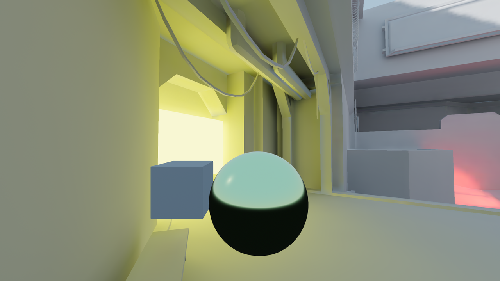
Bật LightmapGI (bake cả ánh sáng trực tiếp và gián tiếp). Hiệu năng tốt nhất nhưng chất lượng hình ảnh thấp hơn. Hãy để ý bóng mặt trời mờ hơn ở góc trên bên phải.
Dưới đây là một số so sánh giữa LightmapGI và VoxelGI. Lưu ý rằng lightmap chính xác hơn, nhưng cũng chịu hạn chế do chiếu sáng nằm trên một texture đã unwrap, nên phần chuyển tiếp và độ phân giải có thể không tốt lắm. VoxelGI trông kém chính xác hơn (vì đây là phép xấp xỉ), nhưng nhìn chung mượt hơn.
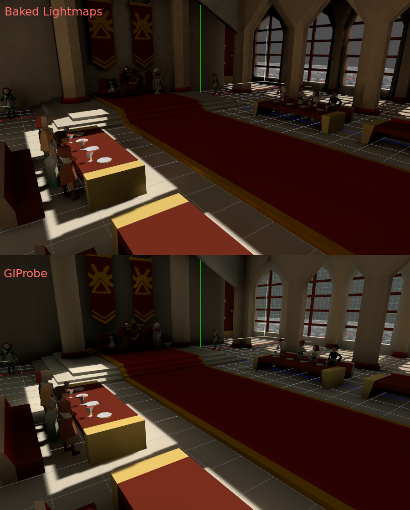
SDFGI cũng kém chính xác hơn so với LightmapGI. Tuy nhiên, SDFGI có thể hỗ trợ thế giới mở rộng lớn mà không cần bake.
Thiết lập
Cảnh báo
Không hỗ trợ bake lightmap trong trình chỉnh sửa web do giới hạn của graphics API. Trên nền tảng web, chỉ hỗ trợ kết xuất lightmap đã được bake trên nền tảng khác.
Ghi chú
Node LightmapGI chỉ bake các node ở cùng cấp với node LightmapGI (anh em), hoặc các node là con của node LightmapGI. Nhờ đó bạn có thể dùng nhiều node LightmapGI để bake các phần khác nhau của scene một cách độc lập với nhau.
Trước hết, trước khi lightmapper làm được gì, các vật thể cần bake phải có một lớp UV2 và kích thước texture. Lớp UV2 là một bộ tọa độ texture thứ cấp đảm bảo mỗi mặt của vật thể có vị trí riêng trong UV map. Các mặt không được dùng chung pixel trong texture.
Có vài cách để đảm bảo vật thể của bạn có lớp UV2 riêng và kích thước texture:
Unwrap khi import scene (khuyến nghị)
Trong hầu hết trường hợp, đây là cách tốt nhất. Nhược điểm duy nhất là với các model lớn, việc unwrap có thể mất một lúc khi import. Dù vậy, Godot sẽ cache UV2 qua các lần reimport, nên nó chỉ được tạo lại khi cần.
Chọn scene đã import trong FileSystem dock, rồi chuyển sang dock Import. Tại đó, bạn có thể thay đổi tùy chọn sau:
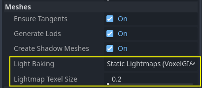
Tùy chọn Meshes > Light Baking phải được đặt là Static Lightmaps (VoxelGI/SDFGI/LightmapGI):
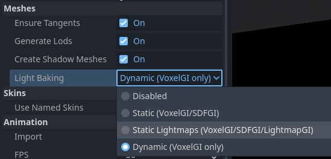
Khi unwrap lúc import, bạn có thể điều chỉnh kích thước texture bằng tùy chọn Meshes > Lightmap Texel Size. Giá trị thấp hơn sẽ cho lightmap chi tiết hơn, có thể nâng chất lượng hình ảnh, đổi lại thời gian bake lâu hơn và tệp lightmap lớn hơn. Giá trị mặc định 0.2 phù hợp với scene nhỏ/vừa, nhưng bạn có thể muốn tăng lên 0.5 hoặc hơn nữa cho scene lớn. Điều này đặc biệt đúng khi bạn chỉ bake chiếu sáng gián tiếp, vì ánh sáng gián tiếp là dữ liệu tần số thấp (nghĩa là không cần texture độ phân giải cao để biểu diễn chính xác).
Khi đặt tùy chọn này, mọi mesh trong scene sẽ được tạo UV2 map đúng cách.
Cảnh báo
Khi dùng lại một mesh trong scene, hãy nhớ rằng UV sẽ được tạo cho instance đầu tiên tìm thấy. Nếu mesh được dùng lại với tỷ lệ khác nhau (và chênh lệch lớn, hơn một nửa hoặc gấp đôi), lightmap sẽ kém hiệu quả. Để tránh điều này, hãy điều chỉnh thuộc tính Lightmap Scale trong mục GeometryInstance3D của node MeshInstance3D. Thuộc tính này cho phép bạn tăng mức chi tiết lightmap cho từng node MeshInstance3D cụ thể (nhưng không giảm được).
Ngoài ra, không nên bỏ qua các tệp *.unwrap_cache trong hệ thống quản lý phiên bản, vì các tệp này đảm bảo việc reimport UV2 nhất quán giữa các nền tảng và phiên bản engine.
Unwrap ngay trong Godot
Cảnh báo
Nếu dùng thao tác trong menu Mesh này trên một scene 3D đã import, UV2 được tạo sẽ bị mất khi scene được tải lại.
Godot có tùy chọn unwrap mesh và hiển thị các kênh UV. Sau khi chọn một node MeshInstance3D, bạn có thể tìm thấy tùy chọn này trong menu Mesh ở phía trên viewport của trình chỉnh sửa 3D:
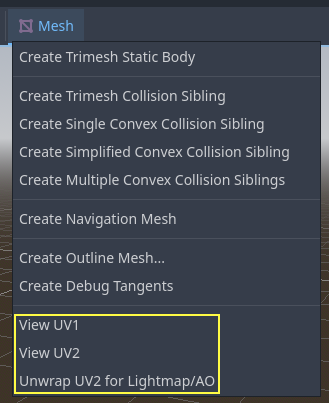
Thao tác này sẽ tạo bộ tọa độ UV2 thứ hai có thể dùng để bake. Nó cũng tự động đặt kích thước texture.
Unwrap từ phần mềm dựng hình 3D
Lựa chọn cuối cùng là thực hiện trong ứng dụng 3D yêu thích của bạn. Cách này thường không được khuyến nghị, nhưng được giải thích để bạn biết là có. Ưu điểm chính là với các vật thể phức tạp mà bạn có thể phải re-import nhiều lần, quá trình tạo texture trong Godot có thể khá tốn kém, nên unwrap sẵn trước khi import có thể nhanh hơn.
Chỉ cần unwrap trên lớp UV2 thứ hai.
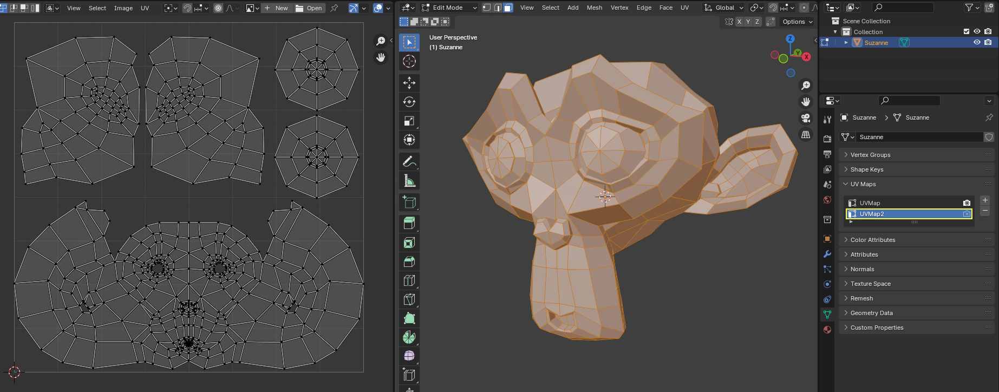
Sau đó import scene 3D như bình thường. Hãy nhớ rằng bạn sẽ cần đặt kích thước texture trên mesh sau khi import.
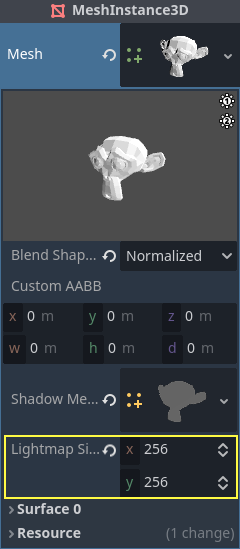
Nếu bạn dùng mesh ngoài khi import, kích thước sẽ được giữ nguyên. Lưu ý rằng hầu hết các công cụ unwrap trong phần mềm dựng hình 3D không hướng đến chất lượng, vì chúng được thiết kế để chạy nhanh. Phần lớn trường hợp bạn sẽ cần dùng seam hoặc các kỹ thuật khác để unwrap tốt hơn.
Tạo UV2 cho primitive mesh
Ghi chú
Tùy chọn này chỉ có cho các primitive mesh như class_BoxMesh, class_CylinderMesh, class_PlaneMesh, v.v.
Bật UV2 trên primitive mesh cho phép chúng nhận và đóng góp vào chiếu sáng đã bake. Điều này có thể hữu ích trong một số thiết lập chiếu sáng. Ví dụ, bạn có thể ẩn một hình xuyến (torus) có material phát sáng sau khi bake lightmap để tạo một area light theo hình dạng hình xuyến.
Theo mặc định, primitive mesh không được tạo UV2 để tiết kiệm tài nguyên (vì các mesh này có thể được tạo trong lúc chơi). Bạn có thể chỉnh primitive mesh trong Inspector và bật Add UV2 để engine tạo UV2 theo thủ tục cho primitive mesh đó. Giá trị UV2 Padding mặc định đã được tinh chỉnh để tránh phần lớn hiện tượng rò lightmap mà không lãng phí quá nhiều không gian ở các cạnh. Nếu bạn thấy rò lightmap chỉ trên một primitive mesh cụ thể, có thể bạn phải tăng UV2 Padding.
Lightmap Size Hint biểu thị kích thước mà một mesh chiếm trên texture lightmap, thay đổi tùy theo các thuộc tính kích thước của mesh và giá trị UV2 Padding. Không nên thay đổi Lightmap Size Hint thủ công, vì mọi thay đổi sẽ bị mất khi scene được tải lại.
Tạo UV2 cho node CSG
Từ Godot 4.4, bạn có thể chuyển một node CSG và các node con của nó thành MeshInstance3D. Có thể dùng cách này để bake lightmap trên node CSG theo các bước sau:
Chọn node CSG gốc và chọn CSG > Bake Mesh Instance ở phía trên viewport của trình chỉnh sửa 3D.
Ẩn node CSG gốc vừa được bake (nó không tự động bị ẩn).
Chọn node MeshInstance3D vừa được tạo và chọn Mesh > Unwrap UV2 for Lightmap/AO.
Bake lightmap.
Mẹo
Hãy nhớ giữ node CSG gốc trong cây scene để bạn có thể thay đổi hình học sau này nếu cần. Để thay đổi hình học, hãy xóa node MeshInstance3D và cho node CSG gốc hiển thị trở lại.
Kiểm tra UV2
Trong menu Mesh đã nhắc ở trên, bạn có thể hiển thị tọa độ texture UV2. Nếu có gì không ổn, hãy kiểm tra lại xem các mesh đã có tọa độ UV2 này chưa:
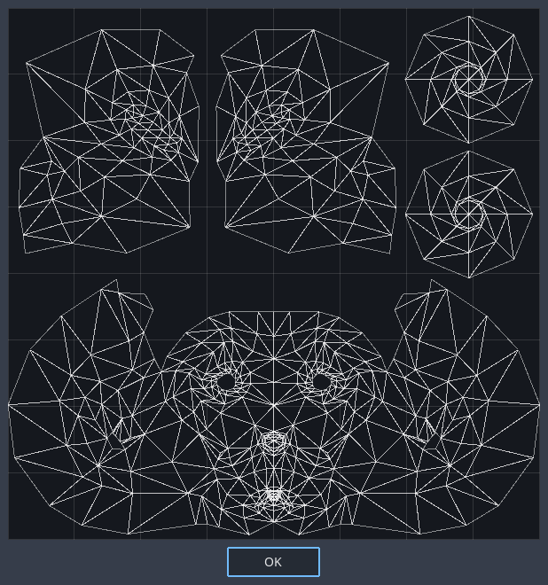
Thiết lập scene
Trước khi làm bất cứ điều gì, cần thêm một node LightmapGI vào scene. Node này sẽ bật tính năng bake ánh sáng cho mọi node (và node con) trong scene đó, kể cả các scene được tạo instance.
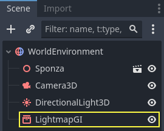
Một sub-scene có thể được tạo instance nhiều lần, vì baker hỗ trợ điều này. Mỗi instance sẽ được gán một lightmap riêng. Để tránh vấn đề tỷ lệ texel lightmap không nhất quán, hãy tuân thủ quy tắc về tỷ lệ mesh đã nêu ở trên.
Thiết lập mesh
Để một node MeshInstance3D tham gia vào quá trình bake, chế độ bake của nó cần được đặt là Static. Các mesh có chế độ bake là Disabled hoặc Dynamic sẽ bị lightmapper bỏ qua.
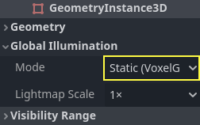
Khi tự động tạo lightmap lúc import scene, tùy chọn này được bật tự động.
Thiết lập đèn
Theo mặc định, đèn chỉ được bake ánh sáng gián tiếp. Nghĩa là shadowmapping và chiếu sáng vẫn là động và ảnh hưởng đến các vật thể chuyển động, nhưng ánh sáng nảy (bounce) từ đèn đó sẽ được bake.
Đèn có thể bị tắt (không bake) hoặc được bake hoàn toàn (trực tiếp và gián tiếp). Có thể kiểm soát điều này từ menu Bake Mode của đèn:
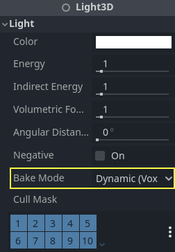
Các chế độ gồm:
Disabled
Đèn bị bỏ qua khi bake lightmap. Đây là chế độ dùng cho các hiệu ứng chiếu sáng động như vụ nổ và hiệu ứng vũ khí.
Cảnh báo
Ẩn một đèn không ảnh hưởng gì đến kết quả bake lightmap. Nghĩa là bạn phải dùng chế độ bake Disabled thay vì ẩn node Light bằng cách tắt thuộc tính Visible của nó.
Dynamic
Đây là chế độ mặc định, là sự dung hòa giữa hiệu năng và khả năng thay đổi thời gian thực. Chỉ chiếu sáng gián tiếp được bake. Ánh sáng trực tiếp và bóng vẫn là thời gian thực, giống như khi không có LightmapGI.
Chế độ này cho phép thực hiện những thay đổi nhỏ về màu, năng lượng và vị trí của đèn mà vẫn trông khá đúng. Ví dụ, bạn có thể dùng nó để tạo những ngọn đuốc tĩnh lập lòe có ánh sáng gián tiếp đã được bake.
Tùy theo giá trị của Shadowmask Mode, bạn vẫn có thể có bóng đã bake ở xa cho DirectionalLight3D. Nhờ đó bóng ở gần là thời gian thực và hiển thị được vật thể động, trong khi các vật thể tĩnh ở xa vẫn đổ bóng.
Static
Cả chiếu sáng gián tiếp và trực tiếp đều được bake. Vì các bề mặt tĩnh có thể bỏ qua hoàn toàn việc tính toán chiếu sáng và bóng, chế độ này cho hiệu năng tốt nhất cùng với bóng mềm không bao giờ mờ dần theo khoảng cách. Đèn thời gian thực sẽ không còn ảnh hưởng đến các bề mặt đã bake, nhưng vẫn ảnh hưởng đến vật thể động. Khi dùng chế độ bake All cho một đèn, vật thể động sẽ không đổ bóng thời gian thực lên bề mặt đã bake, nên bạn cần dùng cách khác như blob shadow. Có thể triển khai blob shadow bằng node Decal.
Đèn hoàn toàn không thể điều chỉnh trong lúc chơi. Di chuyển đèn hoặc đổi màu (hoặc năng lượng) của nó sẽ không có tác dụng gì với các bề mặt tĩnh.
Vì có thể điều chỉnh chế độ bake cho từng đèn, bạn có thể tạo thiết lập chiếu sáng bake kết hợp. Một lựa chọn phổ biến là dùng DirectionalLight thời gian thực với chế độ bake Dynamic, và dùng chế độ bake Static cho OmniLight và SpotLight. Cách này cho hiệu năng tốt mà vẫn cho phép vật thể động đổ bóng thời gian thực ở khu vực ngoài trời.
Đèn được bake hoàn toàn cũng có thể tận dụng thuộc tính Size (omni/spot) hoặc Angular Distance (directional) của node đèn. Nhờ đó bóng có vùng nửa tối (penumbra) chân thực, lớn dần khi khoảng cách giữa vật đổ bóng và bóng tăng lên. Cách này cũng tốn ít hiệu năng hơn so với bóng PCSS thời gian thực, vì chỉ vật thể động mới được kết xuất bóng thời gian thực.
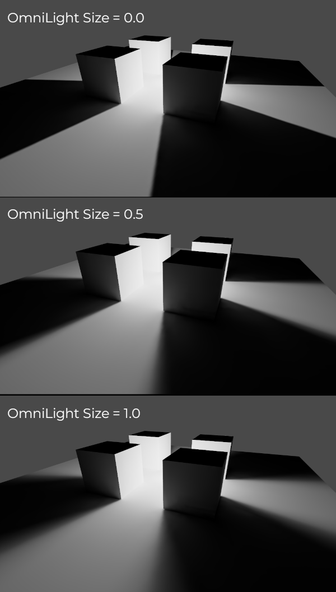
Bake
Để bắt đầu quá trình bake, hãy nhấn nút Bake Lightmaps ở phía trên viewport của trình chỉnh sửa 3D khi đang chọn node LightmapGI:
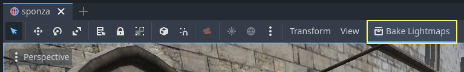
Quá trình này có thể mất từ vài giây đến vài phút (hoặc vài giờ) tùy theo kích thước scene, phương pháp bake và chất lượng được chọn.
Cảnh báo
Bake lightmap là quá trình có thể cần nhiều bộ nhớ video, đặc biệt nếu texture tạo ra lớn. Do giới hạn nội bộ, engine cũng có thể bị crash nếu kích thước texture tạo ra quá lớn (kể cả trên hệ thống có nhiều bộ nhớ video).
Để tránh crash, hãy đảm bảo kích thước texel lightmap trong dock Import được đặt ở giá trị đủ cao.
Tinh chỉnh
Quality: Có bốn chế độ chất lượng bake: Low, Medium, High và Ultra. Chất lượng cao hơn tốn nhiều thời gian hơn, nhưng cho lightmap đẹp hơn và ít nhiễu hơn. Khác biệt đặc biệt rõ với material phát sáng hoặc những khu vực nhận ít hoặc không có ánh sáng trực tiếp. Mỗi chế độ chất lượng bake có thể được điều chỉnh thêm trong Project Settings.
Supersampling: Tạo lightmap ở độ phân giải cao hơn rồi giảm mẫu (downsample). Việc này giảm nhiễu và rò sáng, đồng thời cho bóng tốt hơn với các chi tiết nhỏ. Tuy nhiên, dùng tùy chọn này sẽ tăng thời gian bake và mức dùng bộ nhớ trong khi bake lightmap. Supersampling Factor thay đổi kích thước lightmap được kết xuất trước khi giảm mẫu.
Bounces: Số lần nảy dùng cho chiếu sáng gián tiếp. Giá trị mặc định (
3) là sự dung hòa tốt giữa thời gian bake và chất lượng. Giá trị cao hơn sẽ khiến ánh sáng nảy nhiều lần hơn trước khi dừng, làm chiếu sáng gián tiếp trông mượt hơn (nhưng cũng có thể sáng hơn tùy theo material và hình học).Bounce Indirect Energy: Hệ số nhân toàn cục dùng khi bake năng lượng gián tiếp của đèn. Hệ số này nhân với giá trị Indirect Energy riêng của từng đèn. Các giá trị khác
1.0không chính xác về mặt vật lý, nhưng có thể dùng cho mục đích nghệ thuật.Directional: Nếu bật, lưu thông tin hướng cho lightmap. Điều này cải thiện diện mạo của các material dùng normal map trên bề mặt đã bake, đặc biệt với đèn được bake hoàn toàn (vì chúng cũng bake cả ánh sáng trực tiếp). Nhược điểm là lightmap có hướng tốn kém hơn một chút khi kết xuất. Chúng cũng cần nhiều thời gian bake hơn và tạo ra tệp lớn hơn.
Shadowmask Mode: Nếu đặt ở chế độ khác None, DirectionalLight3D đầu tiên trong scene có chế độ chiếu sáng toàn cục Dynamic sẽ được bake bóng tĩnh vào một texture riêng gọi là shadowmask. Có thể dùng để cho phép các vật thể tĩnh ở xa đổ bóng lên các vật thể tĩnh khác bất kể khoảng cách tới camera. Xem phần về shadowmasking để biết thêm chi tiết.
Interior: Nếu bật, sẽ không lấy chiếu sáng môi trường. Dùng tùy chọn này cho scene hoàn toàn trong nhà để tránh rò sáng.
Use Texture for Bounces: Nếu bật, một texture chứa thông tin chiếu sáng sẽ được tạo để tăng tốc việc tạo chiếu sáng gián tiếp, đổi lại giảm đôi chút độ chính xác. Hình học có thể xuất hiện thêm lỗi rò sáng khi dùng lightmap độ phân giải thấp hoặc UV kéo giãn lightmap đáng kể trên bề mặt. Nếu không chắc, hãy để tùy chọn này bật.
Use Denoiser: Nếu bật, dùng thuật toán khử nhiễu để giảm nhiễu lightmap đáng kể. Việc này tăng thời gian bake và đôi khi có thể gây lỗi hình ảnh, nhưng kết quả thường rất đáng. Xem Khử nhiễu để biết thêm thông tin.
Denoiser Strength: Cường độ của bước khử nhiễu áp dụng lên lightmap được tạo. Giá trị cao hơn khử nhiễu hiệu quả hơn, nhưng có thể làm giảm chi tiết của bóng tĩnh. Chỉ có tác dụng nếu bật khử nhiễu và phương pháp khử nhiễu là JNLM (OIDN không có cài đặt cường độ khử nhiễu).
Bias: Giá trị độ lệch dùng cho bóng, tính theo đơn vị 3D. Thông thường bạn không cần đổi giá trị này, trừ khi gặp vấn đề rò sáng hoặc đốm tối trong lightmap sau khi bake. Cài đặt này không ảnh hưởng đến bóng thời gian thực đổ lên bề mặt đã bake (với đèn có chế độ bake Dynamic).
Max Texture Size: Kích thước texture tối đa cho texture atlas được tạo. Giá trị cao hơn sẽ tạo ít lát cắt hơn, nhưng có thể không chạy được trên mọi phần cứng do giới hạn phần cứng về kích thước texture. Nếu không chắc, hãy để ở giá trị mặc định
16384.Environment > Mode: Kiểm soát cách lấy chiếu sáng môi trường khi bake lightmap. Giá trị mặc định Scene phù hợp với màn chơi có phần ngoài trời nhìn thấy được. Với scene hoàn toàn trong nhà, hãy đặt là Disabled để tránh rò sáng và tăng tốc bake. Bạn cũng có thể đặt là Custom Sky hoặc Custom Color để dùng chiếu sáng môi trường khác với bầu trời môi trường thực của scene.
Gen Probes > Subdiv: Xem Vật thể động.
Data > Light Data: Xem Dữ liệu lightmap.
Dùng shadowmasking cho bóng directional ở xa
Khi dùng DirectionalLight3D, khoảng cách tối đa mà nó vẽ được bóng thời gian thực bị giới hạn bởi thuộc tính Shadow Max Distance. Điều này có thể là vấn đề trong scene lớn, vì các vật thể ở xa sẽ không có bóng nào từ DirectionalLight3D. Dù có thể giải quyết bằng cách dùng chế độ chiếu sáng toàn cục Static cho DirectionalLight3D, cách này có một số nhược điểm:
Vì cả ánh sáng trực tiếp và gián tiếp đều được bake, không có cách nào để vật thể động đổ bóng lên bề mặt tĩnh một cách chân thực. Trong trường hợp này Godot bỏ qua hoàn toàn việc lấy mẫu bóng để tránh lỗi hình ảnh "chiếu sáng kép".
Bóng tĩnh ở gần thiếu chi tiết, vì chúng chỉ dựa vào texture lightmap chứ không dựa vào shadow cascade thời gian thực.
Chúng ta có thể tránh các nhược điểm này mà vẫn có bóng ở xa bằng cách dùng shadowmasking. Dù vật thể động sẽ không nhận bóng từ shadowmask, nó vẫn cải thiện hình ảnh đáng kể vì phần lớn scene chủ yếu gồm các vật thể tĩnh.
Vì riêng texture lightmap không chứa thông tin bóng, chúng ta có thể bake thông tin bóng này vào một texture riêng gọi là shadowmask.
Shadowmasking chỉ ảnh hưởng đến DirectionalLight3D đầu tiên trong scene (xác định theo thứ tự cây) có chế độ chiếu sáng toàn cục Dynamic. Không thể dùng shadowmasking với chế độ chiếu sáng toàn cục Static, vì chế độ này bỏ qua hoàn toàn việc lấy mẫu bóng trên vật thể tĩnh. Lý do là chế độ chiếu sáng toàn cục Static bake cả ánh sáng trực tiếp và gián tiếp.
Có ba chế độ shadowmasking:
None (mặc định): Không bake texture shadowmask. Bóng directional sẽ không hiển thị bên ngoài phạm vi chỉ định bởi thuộc tính Shadow Max Distance của DirectionalLight3D.
Replace: Bake texture shadowmask và dùng nó để vẽ bóng directional khi nằm ngoài phạm vi chỉ định bởi thuộc tính Shadow Max Distance của DirectionalLight3D. Bóng trong phạm vi này vẫn hoàn toàn thời gian thực. Tùy chọn này nhìn chung hợp lý nhất cho hầu hết scene, vì nó xử lý tốt các vật thể tĩnh có chuyển động nhẹ (ví dụ bóng của tán lá).
Overlay: Bake texture shadowmask và dùng nó để vẽ bóng directional bất kể khoảng cách tới camera. Bóng trong phạm vi thuộc tính Shadow Max Distance của DirectionalLight3D sẽ được phủ thêm bóng thời gian thực. Điều này giúp chuyển tiếp giữa bóng thời gian thực và bóng đã bake bớt gượng hơn, đổi lại có hiệu ứng "nhòe" trên bóng của vật thể tĩnh tùy theo mật độ texel lightmap. Ngoài ra, chế độ này không xử lý tốt bằng các vật thể tĩnh có chuyển động nhẹ (như tán lá), vì bóng đã bake không thể tạo hoạt ảnh theo thời gian. Dù vậy, với scene mà camera di chuyển nhanh, đây có thể là lựa chọn tốt hơn Replace.
Dưới đây là so sánh trực quan các chế độ shadowmask trong một scene mà Shadow Max Distance được đặt rất thấp để tiện so sánh. Các hộp màu xanh dương là vật thể động, còn phần còn lại của scene là vật thể tĩnh. Chỉ có một DirectionalLight3D duy nhất trong scene với chế độ chiếu sáng toàn cục Dynamic:
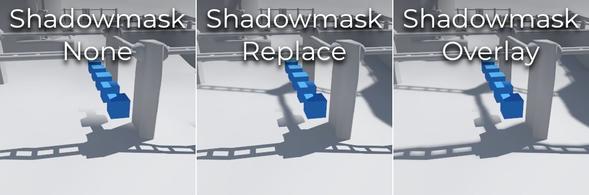
So sánh giữa các chế độ shadowmask
Ghi chú
Bạn có thể chuyển đổi giữa chế độ shadowmask Replace và Overlay mà không cần bake lại lightmap.
Cân bằng giữa thời gian bake và chất lượng
Vì bake chất lượng cao có thể mất rất lâu (đến hàng chục phút với scene lớn và phức tạp), bạn nên dùng cài đặt chất lượng thấp hơn lúc đầu. Sau đó, khi đã hài lòng với thiết lập chiếu sáng của scene, hãy nâng cài đặt chất lượng và thực hiện lần bake "cuối cùng" trước khi xuất (export) dự án.
Giảm độ phân giải lightmap bằng cách tăng Lightmap Texel Size trên các scene 3D đã import cũng sẽ tăng tốc bake đáng kể. Tuy nhiên, bạn sẽ phải reimport tất cả các scene 3D dùng lightmap trước khi có thể bake lại lightmap.
Khử nhiễu
Vì bake lightmap dựa trên raytracing, lightmap "thô" sau khi bake luôn có nhiễu thấy rõ. Nhiễu đặc biệt rõ ở những khu vực ánh sáng nảy khó tới, như khu vực trong nhà có ô cửa nhỏ để ánh nắng lọt vào. Có thể giảm nhiễu bằng cách tăng chất lượng bake, nhưng làm vậy sẽ tăng thời gian bake đáng kể.
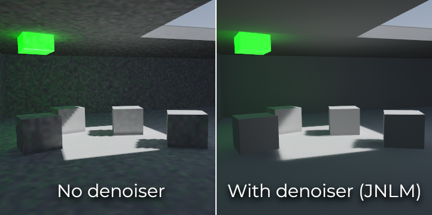
So sánh giữa tắt và bật khử nhiễu (với bộ khử nhiễu JNLM mặc định).
Để xử lý nhiễu mà không tăng thời gian bake quá nhiều, có thể dùng bộ khử nhiễu (denoiser). Bộ khử nhiễu là một thuật toán chạy trên lightmap đã bake hoàn chỉnh, phát hiện các mẫu nhiễu và làm mềm chúng trong khi cố gắng giữ chi tiết tốt nhất có thể. Godot cung cấp hai thuật toán khử nhiễu:
JNLM (Non-Local Means with Joint Filtering)
JNLM là phương pháp khử nhiễu mặc định và có sẵn trong Godot. Nó dùng một thuật toán khử nhiễu đơn giản nhưng hiệu quả gọi là non-local means. JNLM chạy trên GPU bằng compute shader, và tương thích với mọi GPU chạy được các renderer dựa trên RenderingDevice của Godot 4. Không cần thiết lập thêm gì.
Có thể điều chỉnh khử nhiễu của JNLM bằng thuộc tính Denoiser Strength, hiển thị khi bật Use Denoiser. Giá trị cao hơn có thể khử nhiễu hiệu quả hơn, đổi lại làm mất chi tiết của bóng tĩnh.
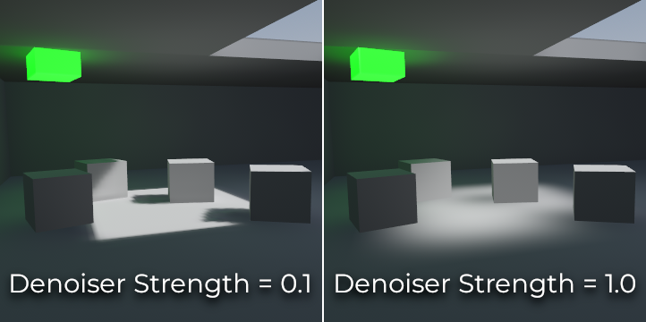
So sánh giữa các giá trị cường độ khử nhiễu JNLM. Giá trị cao hơn có thể làm giảm chi tiết.
OIDN (Open Image Denoise)
Khác với JNLM, OIDN dùng cách tiếp cận học máy để khử nhiễu lightmap. Nó có một model được huấn luyện riêng để loại bỏ nhiễu khỏi lightmap, đồng thời giữ được nhiều chi tiết bóng hơn so với JNLM trong hầu hết scene.
OIDN có thể chạy trên GPU nếu đã cấu hình tăng tốc phần cứng. Với GPU cao cấp hiện đại, cách này có thể nhanh hơn 50× so với khử nhiễu bằng CPU:
Trên GPU AMD, phải cài đặt và cấu hình HIP.
Trên GPU NVIDIA, phải cài đặt và cấu hình CUDA. Việc này có thể được trình cài đặt NVIDIA thực hiện tự động, nhưng trên Linux, thư viện CUDA có thể không được cài theo mặc định. Hãy kiểm tra lại xem các gói CUDA từ bản phân phối Linux của bạn đã được cài chưa.
Trên GPU Intel, phải cài đặt và cấu hình SYCL.
Nếu không có tăng tốc phần cứng, OIDN sẽ chuyển sang khử nhiễu đa luồng bằng CPU. Để xác nhận khử nhiễu bằng GPU có hoạt động hay không, hãy dùng công cụ theo dõi mức sử dụng GPU khi bake lightmap và xem phần trăm sử dụng GPU cũng như mức dùng VRAM trong lúc trình chỉnh sửa Godot hiển thị bước khử nhiễu. Công cụ dòng lệnh nvidia-smi có thể hữu ích cho việc này.
OIDN không đi kèm Godot do dung lượng tải về tương đối lớn. Bạn có thể tải các gói nhị phân OIDN đã biên dịch sẵn từ trang web của nó. Giải nén gói vào một vị trí trên máy, rồi chỉ định đường dẫn tới tệp thực thi oidnDenoise trong Editor Settings (FileSystem > Tools > OIDN > OIDN Denoise Path). Tệp thực thi này nằm trong thư mục bin của gói nhị phân bạn đã giải nén.
Sau khi chỉ định đường dẫn tới tệp thực thi khử nhiễu OIDN, hãy đổi phương pháp khử nhiễu trong cài đặt dự án bằng cách đặt Rendering > Lightmapping > Denoiser thành OIDN. Thay đổi này sẽ ảnh hưởng đến mọi lần bake lightmap trong dự án sau khi cài đặt được đổi.
Ghi chú
Phương pháp khử nhiễu được cấu hình trong cài đặt dự án thay vì cài đặt trình chỉnh sửa. Điều này đảm bảo các thành viên khác nhau cùng làm trên một dự án sẽ dùng chung phương pháp khử nhiễu để có kết quả nhất quán.
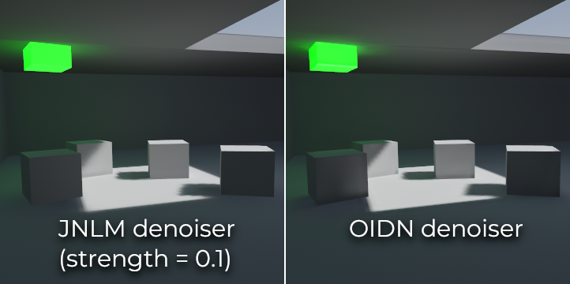
So sánh giữa bộ khử nhiễu JNLM và OIDN. Hãy để ý OIDN giữ chi tiết tốt hơn và giảm đường nối (seam) giữa các vật thể khác nhau.
Vật thể động
Khác với VoxelGI và SDFGI, vật thể động nhận chiếu sáng gián tiếp theo cách khác so với vật thể tĩnh. Lý do là lightmapping chỉ được thực hiện trên vật thể tĩnh.
Để hiển thị chiếu sáng gián tiếp trên vật thể động, một hệ thống probe 3D được sử dụng, với các light probe trải khắp scene. Khi bake lightmap, lightmapper sẽ tính lượng ánh sáng gián tiếp mà probe nhận được. Ánh sáng trực tiếp không được lưu trong light probe, kể cả với đèn có chế độ bake là Static (vì vật thể động vẫn tiếp tục được chiếu sáng theo thời gian thực).
Có 2 cách thêm light probe vào scene:
Automatic: Đặt Gen Probes > Subdiv thành giá trị khác Disabled, rồi bake lightmap. Mặc định là
8, nhưng bạn có thể chọn giá trị lớn hơn để cải thiện độ chính xác, đổi lại thời gian bake lâu hơn và tệp đầu ra lớn hơn.Manual: Ngoài việc tạo probe tự động hoặc thay cho cách đó, bạn có thể thêm light probe thủ công bằng cách thêm các node class_LightmapProbe vào scene. Có thể dùng cách này để cải thiện chi tiết chiếu sáng ở những khu vực vật thể động thường xuyên đi qua. Sau khi đặt các node LightmapProbe trong scene, bạn phải bake lại lightmap để chúng có hiệu lực.
Ghi chú
Sau khi bake lightmap, bạn sẽ thấy các quả cầu trắng trong scene 3D thể hiện cách chiếu sáng đã bake ảnh hưởng đến vật thể động. Các quả cầu này không xuất hiện khi chạy dự án.
Nếu muốn ẩn các quả cầu này trong trình chỉnh sửa, hãy bật/tắt View > Gizmos > LightmapGI ở phía trên trình chỉnh sửa 3D (biểu tượng "mắt nhắm" cho biết gizmo đang bị ẩn).
Dữ liệu lightmap
Thuộc tính Data > Light Data trong node LightmapGI chứa dữ liệu lightmap sau khi bake. Texture được lưu xuống đĩa, nhưng thuộc tính này còn chứa dữ liệu capture cho vật thể động, vốn có thể khá nặng. Nếu bạn dùng scene ở định dạng .tscn, bạn nên lưu resource này ra một tệp nhị phân .lmbake bên ngoài để tránh làm phình scene .tscn bằng dữ liệu nhị phân mã hóa Base64.
Mẹo
Tệp EXR được tạo có thể xem và thậm chí chỉnh sửa bằng trình chỉnh sửa ảnh để hậu kỳ nếu cần. Tuy nhiên, hãy nhớ rằng các thay đổi trên tệp EXR sẽ bị mất khi bake lại lightmap.
Giảm lỗi hình ảnh của LightmapGI
Nếu bạn thấy các node LightmapGI lúc hiện lúc mất khi camera di chuyển, nhiều khả năng là do engine đang kết xuất quá nhiều instance LightmapGI cùng lúc. Godot chỉ kết xuất tối đa 8 node LightmapGI cùng lúc, nghĩa là có thể có tối đa 8 instance trong khung nhìn camera trước khi một số bắt đầu nhấp nháy.